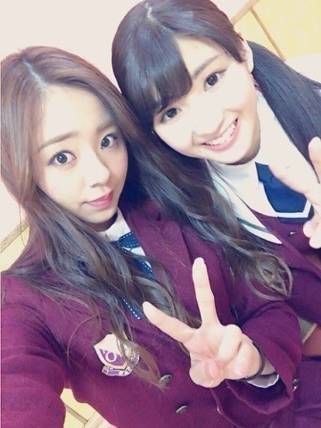
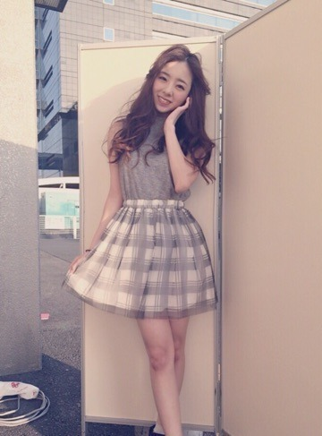
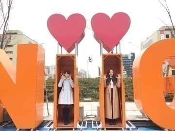
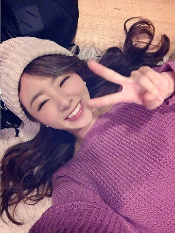

| 2016/02 29 Mon | 川村真洋 お待たせっちゃん♡ |
こんばんわ～^ ^
川村 まひろです♡
選抜発表以来のblogとなります♡
長らくお待たせしました．

昨日と一昨日は，京都で握手会でした！
また沢山の方とお話ができて嬉しかったです．
京都の方も，遠い所から集まってくれた皆さんも，本当にありがとう(^.^).＊
そして，らりんの最後の握手会でもありました． 今までらりんの握手会に行ってたファンの皆... 寂しいだろうなぁ。。>_<
らりんのあのとびっきりの笑顔に元気を貰ってた人は沢山居たと思う．
らりんも最後までやりきったね♡
おつかれさま...(^ ^)
まに私服。グレー ノースリーブニット♡

あっ！
そしてそして昨日，ラジオでアンダー楽曲，「不等号」が流れました．
どうでしたか♡？
今回もアンダー楽曲，いい感じですね...ふふふ♡笑 間奏の部分が今までの楽曲の中でも1番激しい感じですよね... もう振り入れもやってあるので，全握やライブ，お楽しみだねぇ^ ^
私は中田と2人で歌ってます．
Bメロに入る前と，2番のAメロです♡
後，曲のハモは全部，私とじゅんなで歌ってますので，良かったらちょっと気にしてみてくださいね？ぁは
そして，，，
46時間TVお疲れ様でしたっ。。
私とさゆりで，新潟&大阪へと行きましたぁ．
新潟のにい．の部分に入らせてもらったよ 笑
わー

楽しかった
集まってくれた皆さん本当にありがとう♡
おかげさまでね，最高の乃木坂の詩が完成しましたねぇ(^ ^)ぇへ
1日目は大阪から東京に戻り，ホテルに着いたのが夜1時ごろでした...
そっからお風呂に入り2時に就寝，，2時半起床。 ありゃ♡？ 30分しか寝る暇なかったーーーー\(^ ^)/♡♡♡
そのまま2日目のオープニングへ...。
大変だったけど，本当に楽しかった♡
来年もやりたぁ～い.＊
あっ、
そーいやカラオケ対決もあったねー♪♪♪
ぃゃ～。よかったよ。。笑
川村まひろ，なんとか「１位」獲得っ！！！！！ よかった～^ ^.＊ぁはは
えと，秦 基博さんの「ひまわりの約束」を歌いました^ ^ノ TVで男性アーティストさんの歌を歌ったのは初めてかな？？ の前に，ソロでフル尺オンエアされたのも初めてでしたね♡
なにより，上位半分が（えりか除き♡）全員アンダーメンバーだったってことが，すごいよぉぉぉ（ ; ; ）♡♡♡って思いました。 なんだか嬉ちかったなぁぁ.＊
はいっ！ ということでまた更新しますっ♡.＊
じゅうたんの上でゴローーン♡ってしながら撮ったよ？
まったねぇ。
